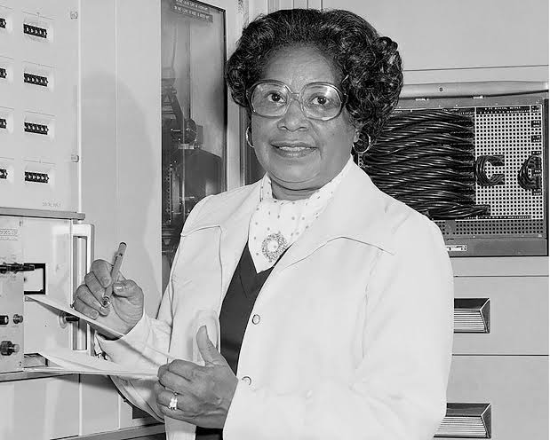

Liderou a transição histórica da computação humana para os supercomputadores IBM na NASA. Uma mente visionária que abriu caminhos e formou a elite da tecnologia aeroespacial.

Formou-se aos 19 anos em Matemática na Wilberforce University com honras. Enfrentou a Grande Depressão buscando oportunidades em um mercado restrito para mulheres negras.
Lecionou matemática em escolas públicas da Virgínia por mais de uma década, desenvolvendo uma habilidade pedagógica única para explicar conceitos complexos de forma simples.
Respondendo ao chamado da NACA em 1943 para reforçar o setor aeronaval durante a Segunda Guerra Mundial, mudou-se para Langley para assumir o cargo de "Computadora Humana".
Clique nos botões de ano para navegar pela trajetória de Dorothy.
Início do trabalho no centro de pesquisas aeroespaciais Langley. Dorothy foi alocada na seção "West Area Computers", constituída por matemáticas afro-americanas sob regime de segregação racial.
Clique em qualquer cartão para abrir a página detalhada em uma nova aba.
Prevendo o impacto dos supercomputadores IBM 7090, aprendeu a linguagem FORTRAN de forma independente e capacitou toda sua equipe feminina, salvando suas carreiras na era digital.
Na Divisão de Análise e Computação (ACD), contribuiu diretamente nos manuais e cálculos de órbita para os veículos Scout, essenciais para o lançamento de satélites americanos.
Promoveu talentos excepcionais como Katherine Johnson (famosa pelos cálculos da órbita de John Glenn) e Mary Jackson (primeira engenheira aeroespacial negra da NASA).
Sua equipe produzia tabelas matemáticas de altíssima precisão usadas por engenheiros de testes em túneis de vento antes da popularização da computação eletrônica.
Teste o cálculo de aceleração orbital usando os parâmetros do Projeto Scout.
// C CÁLCULO DE PROPULSÃO DE FOGUETE - DOROTHY VAUGHAN
Teste seu aprendizado sobre a história de Dorothy Vaughan.